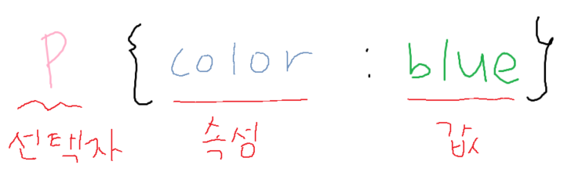
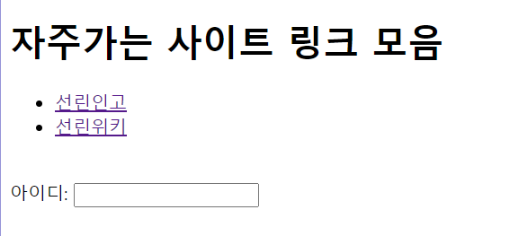
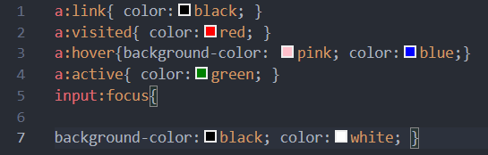

: 스타일을 지정할 HTML 요소를 선택하는 부분

1. 타입 선택자 (type selector)
- 태그 이름 {속성 : 값; 속성: 값;}.
- HTML 요소(태그) 이름을 사용
2. 아이디 선택자 (id selector)
- #id값 { 속성 : 값; 속성:값;}
- id로 지정된 특정한 요소를 선택
3. 클래스 선택자(class selector)
- . 클래스명 {속성 : 값; 속성: 값;}.
- 클래스가 부여된 요소를 선택
- 여러 개의 요소를 하나의 클래스로 묶어서 스타일을 지정하려고 할 때 사용
- id, class, name 비교
| id |
class |
name |
| 하나의 요소만 가능(페이지 유일) |
여러 요소 적용 가능 |
여러 요소 적용 가능 |
| CSS에서 식별자로 사용 가능 |
CSS에서 식별자로 사용 가능 |
CSS에서 사용 불가 |
| - |
- |
<form> submit 전송시 사용 가능 |
- 스타일 충돌 시
- 스타일 적용 범위가 좁을 수록 우선순위가 높음
- 태그 스타일
- 클래스 스타일
- id 스타일
-> 스타일 적용범위가 같다면, 소스코드가 아래에 있을수록 우선순위가 높음
-> 모든 우선순위를 뛰어넘을 수 있는 방법 : !important (비추)
- 선택자 그룹
: 선택자를 콤마(,)로 분리하여 나열 할 수 있다.
4. 자식 선택자(child), 자손 선택자(descendent)
| 선택자 |
예시 |
설명 |
| 자식 선택자 |
s1>s2 |
s1 요소의 직계 자식 요소인 s2를 선택한다.(부모자식 관계) |
| 자손 선택자 |
s1 s2 |
s1 요소의 포함된 s2 요소를 선택한다.(조상자손 관계) |
- body > p {color: blue;} /*body의 직계자식 p 요소 */
- body p {color: red;} /*body 안의 자손 p 요소 */
5. 전체 선택자(universal selector)
- * { 속성:값; 속성: 값; }
- 페이지 안의 모든 요소를 선택
- 주로 모든 요소에 공통적인 속성을 지정할 때 사용
6. 속성 선택자(attribute selector)
- [속성명="속성값"] {속성 : 값; 속성 : 값;}
- 특정한 속성(또는 그 값)을 가지는 요소를 선택
- 대괄호[] 사용
- h1[title] {color : blue;} /*h1태그 중 title속성을 사용하는 요소*/
- p[class= "example"] {color: blue;} /*p태그 중 class속성의 값이 example인 요소*/
7. 가상클래스 선택자(pseudo-class selector)
- 클래스가 정의(선언)된 것 처럼 간주
- 콜론( : ) 사용
- :link, :visited, :hover, :active, :focus 등등 40개 이상 존재
8. 예제 ; 가상클래스 - :link, :visited, :hover, :active

- :link, :visited, :hover, :active 각각 색 바꾸기
예시 코드

9. 선택자 연습 게임
선택자 연습하기